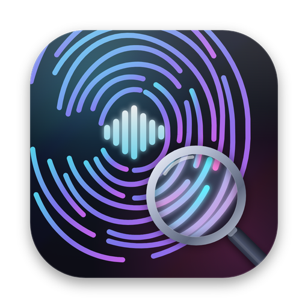
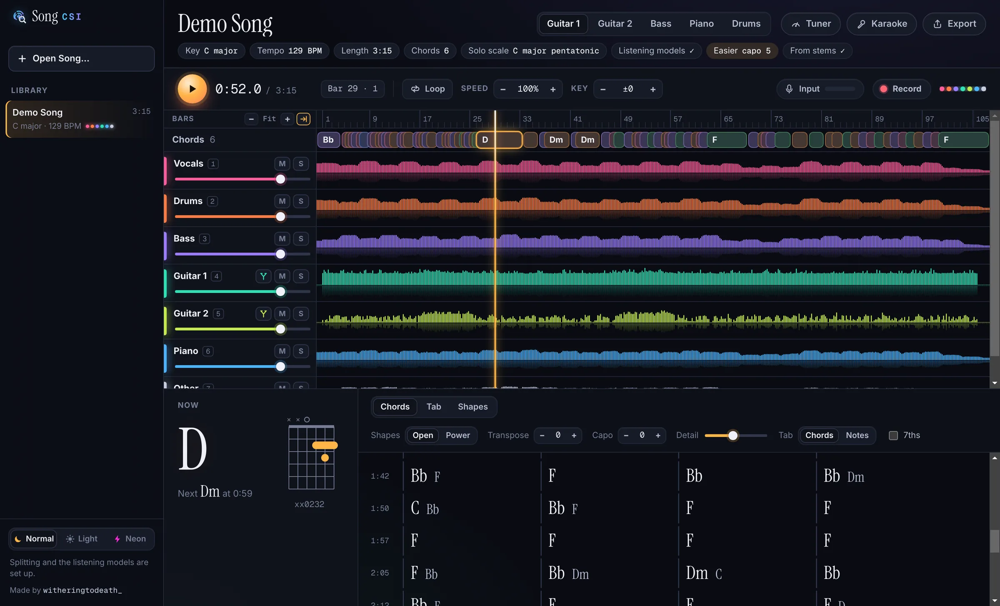
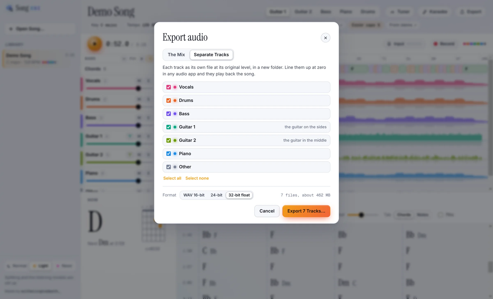

Drop a song. Crack the case.
Song CSI goes over any song for evidence: the beat, the key and every chord, written out for guitar, bass, piano or drums. Split it into vocals, drums, bass, both guitars, piano and the rest, then mute any of them and play the part yourself.

Everything you need to learn a song by ear, minus the guesswork.
Chords and tabs
The key, the tempo and every chord, as a chord sheet, a tab and chord shapes. It suggests an easier capo, transposes, and follows along as the song plays.
Every instrument
Splits the song into vocals, drums, bass, guitar, piano and the rest. Mute, solo and set the volume of each one, then play your part over the others.
Both guitars
Splits the guitar track into Guitar 1 and Guitar 2, by where each sits in the mix or by what each plays. The two add back up to the original, so the mix never changes.
Note-for-note tabs
Writes out the notes each guitar and the bass actually play, chords and riffs included, in standard, Drop D, E♭, Drop C♯, Drop C or Drop B tuning.
Practice tools
Slow it down without changing the pitch, move it to another key, and loop any bars. A tuner, karaoke with pitch scoring and recording are built in.
Export
Save the mix you hear, or every track as its own WAV file, with your speed and key change if you like. Export any chart as a text tab too.
Normal, Light or Neon.
Each instrument keeps its own colour from the mixer to the timeline and the chart, whichever look you pick.


Download and open it.
Song CSI isn't signed with a paid Apple developer certificate, so macOS asks you to confirm it the first time. After that it opens like any other app.
Download Song CSI and double-click the zip if your Mac didn't open it already.
Drag Song CSI into your Applications folder.
macOS says it can't check the app for malicious software. Click Done.
Open System Settings → Privacy & Security, scroll down, click Open Anyway next to Song CSI, then Open. On macOS 14 or earlier you can also Control-click the app and choose Open.
The first time you split a song, Song CSI downloads its splitting engine and listening models once, about 450 MB. After that everything runs offline, and nothing you open leaves your Mac.
Four open-source models, all running on your Mac.
Good to know.
Does it work on Intel Macs or Windows?
Not yet. This version is for Macs with Apple Silicon (M1 or newer).
Can it open songs from Spotify, Apple Music or YouTube?
No. Streaming services protect their audio, so Song CSI works with files you have: mp3, m4a, wav, aiff, flac or ogg, such as iTunes purchases, Bandcamp downloads or your own recordings.
How accurate is it?
It's automatic, so treat it as a strong first draft and check by ear. Chords and beats are usually solid. Note-for-note tabs are best on clear single-note parts and solos, and get harder with heavy distortion or fast playing.
Does anything get uploaded?
No. Analysis, splitting and every model run on your Mac. The only downloads are the engine and models, once, the first time you split a song.
What does it cost?
Nothing. It's a personal project, shared for free.